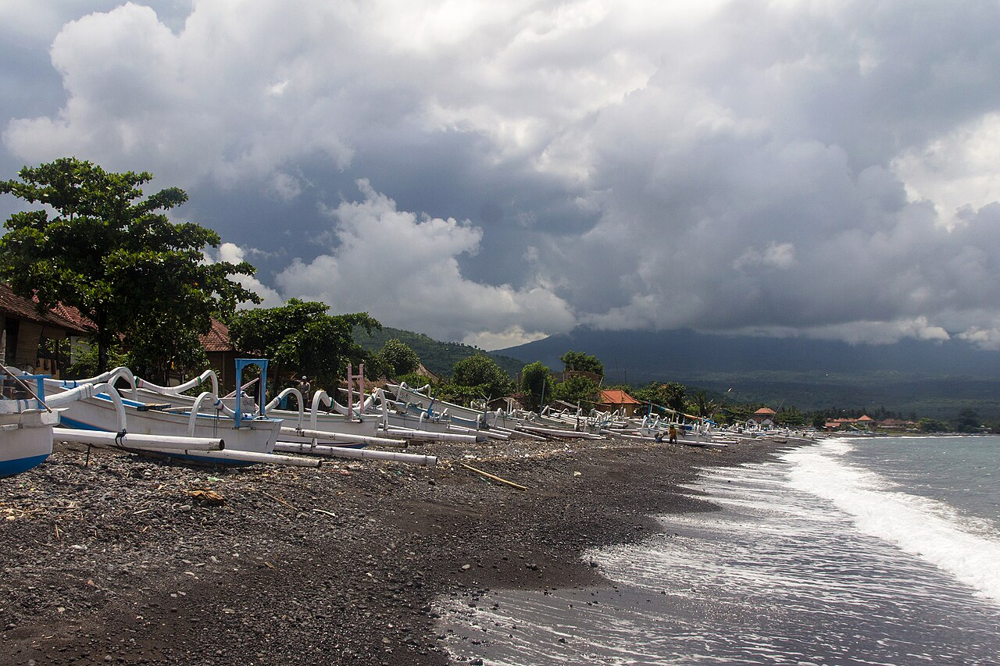
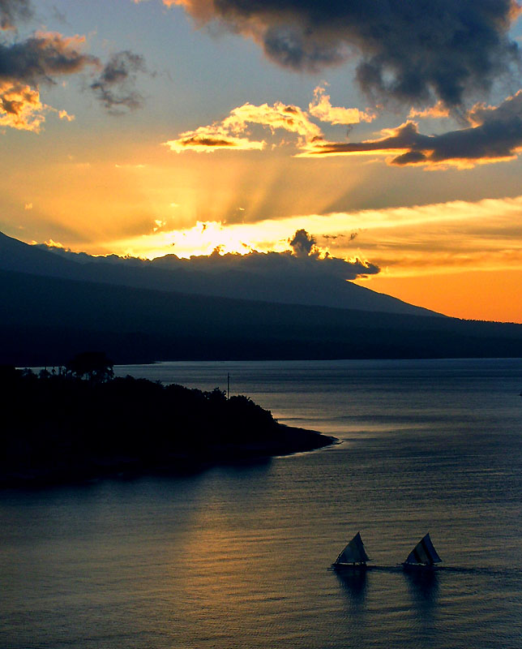
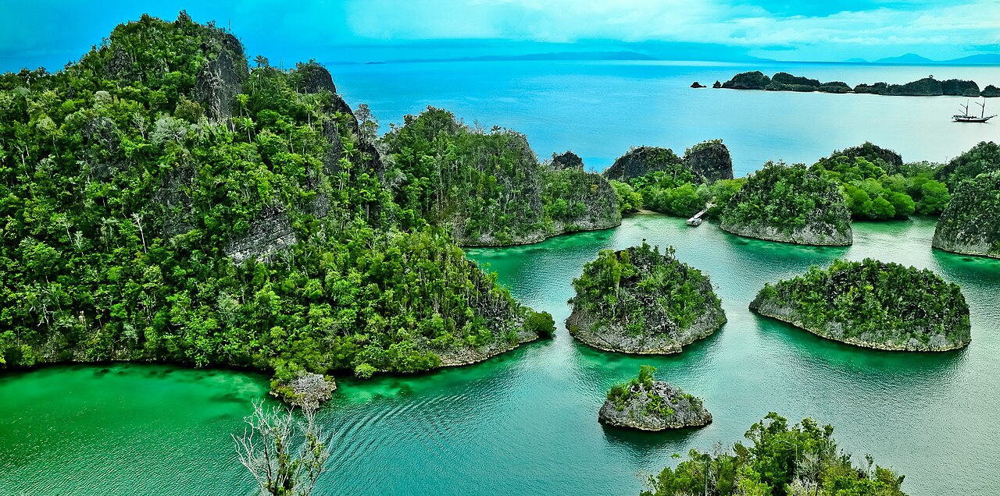
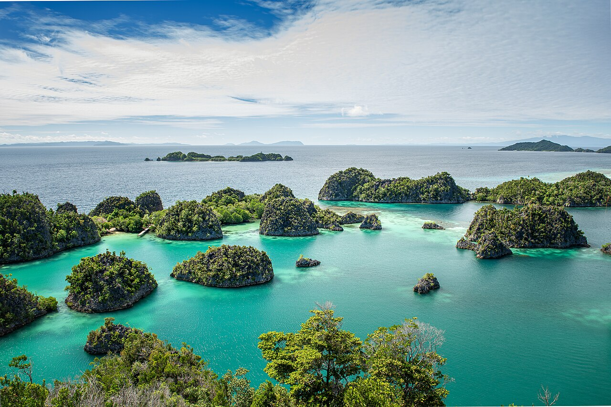

Amed beach.jpg
Photo: Ch cat · Original source · Creative Commons licence
Original photographs from Wikimedia Commons. Images are displayed with responsive cropping; downloaded files are otherwise unchanged.

Photo: Ch cat · Original source · Creative Commons licence

Photo: Riza Nugraha · Original source · Creative Commons licence

Photo: Yurianto76 · Original source · Creative Commons licence

Photo: Rolandandika · Original source · Creative Commons licence